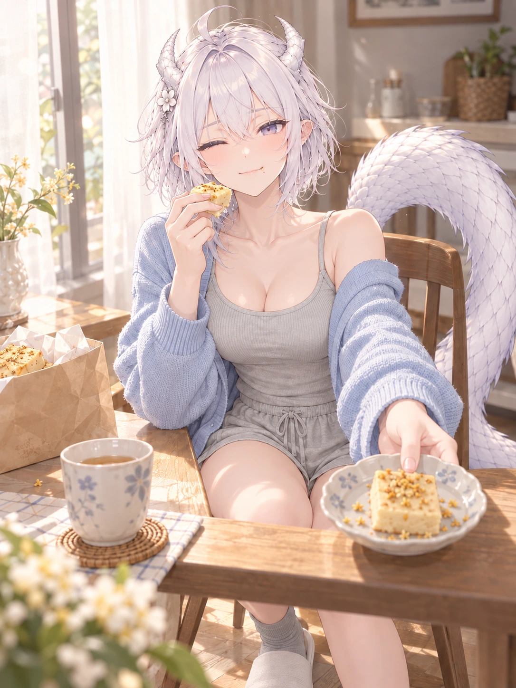

其他制作记录 / 逐页阅读
N02 · 桂花糕先尝一口
一次修正后待审 · 头姿改善，角形与尾根未通过

检查与反馈记录
- 脸发、单侧眯眼与小坏笑有生命力；浅蓝开衫、灰背心和灰短裤符合H01，餐桌、茶与桂花糕明确是普通家居。
- v02头部已接近正直。角比v01缩小，但浅S形两次方向变化仍不够清晰，与B05v03有差距，不能作为角形标准。
- 单条白尾体量很大；尾根仍被椅背和身体遮挡，画面上端靠近上背，无法验证从骶骨唯一接出的连续关系，不能作为尾根标准。
- 主角两手分别持糕和推碟；桌面遮挡大腿/髋部，腿脚链路不完整核验，未见额外肢体。
- 保留修正版供用户审阅；本图的角形、尾根连接和下身人体关系未通过验收，不再自动消耗修正额度。
- 第一批首图按用户此前明确授权的三张清单生成；逐张检查后只对N01与N02各做一次定向修正。